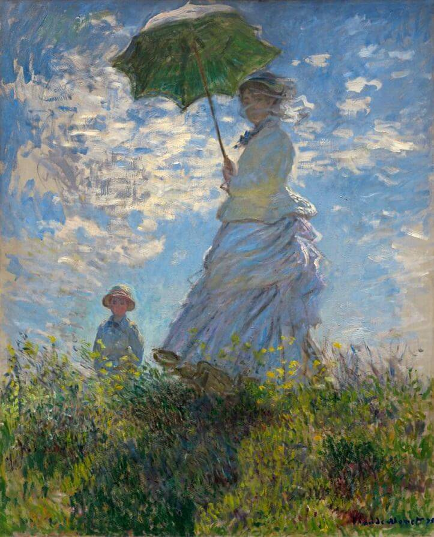
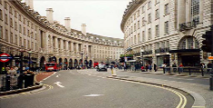

01 — El origen
¿Por qué rayos
quería hacer esto?
Un día buscando inspiración para crear nuevos juegos vi A Short Hike y me dejó muy marcado su arte. Es un mundo 3D pero con un shader pixelado encima y dije: WOW ¿qué es esto? ¿cómo se hace? y me puse a investigar.
Los únicos shaders que conocía eran los de Minecraft. Investigando descubrí The Book of Shaders de Patricio Gonzalez Vivo y Jen Lowe, que fue mi principal guía para aprender.
Luego me pregunté: ¿qué estilo artístico sería interesante ver en un videojuego? Y ahí es donde se me ocurrió imitar a Claude Monet.
Cuando pequeño mis padres compraron revistas de pintores que venían en el diario y una era de Monet. Quedé muy fascinado con su arte, por eso lo elegí.

A Short Hike — inspiración visual
02 — Estudiando a Monet
Antes del código,
las pinturas.
Lo primero que noté fueron los reflejos del agua en La Grenouillère. Son muy bonitos. La manera en que dibuja personas con tan pocos trazos es genial.
Otra cosa interesante es cómo dibuja las nubes. Estas cosas sí o sí debían estar en el videojuego.

La Grenouillère, 1869 — Claude Monet

Woman with a Parasol, 1875 — Claude Monet
Monet no pintaba detalles. Pintaba cómo se siente la luz.
03 — Primeros shaders
Mi primer shader
era un rectángulo azul.
Mi primera experiencia programando shaders fue en thebookofshaders.com. El “Hola Mundo” básicamente pintaba todos los píxeles con un color sólido.
#ifdef GL_ES
precision mediump float;
#endif
uniform float u_time;
void main() {
gl_FragColor = vec4(1.0,0.0,1.0,1.0);
}
Este script pinta todos los píxeles del objeto con un color sólido.
Lo más difícil fue entender la matemática. Sentí que algo funcionó cuando logré animar un gradiente usando la función seno sobre el tiempo.
Definitivamente lo más confuso fueron las matrices en GLSL. Me hubiera ayudado haber prestado más atención en clases.
04 — El algoritmo
El Kuwahara filter,
o cómo pintar sin pintar.
El filtro Kuwahara suaviza áreas uniformes sin destruir bordes. Para cada píxel:
- Mira un cuadrado alrededor.
- Lo divide en 4 partes.
- Elige la parte más uniforme.
- Usa su color promedio.
Funciona porque imita cómo el ojo humano simplifica una escena. No copia la foto, copia la percepción.

Resultado en Shadertoy

Imagen original
05 — Los toques finales
Vibración de color
y un poco de bloom.
Kuwahara solo suaviza. No agrega textura ni energía visual. Se veía como una foto filtrada, no como pintura real.
El ruido introduce micro-variaciones, como el grano de la pintura, y el bloom ayuda a que la luz se sienta más viva.
06 — En Godot
Portarlo a Godot
fue más fácil de lo esperado.
En Shadertoy usas mainImage, iResolution e iChannel0. En Godot usas SCREEN_UV, COLOR y el pipeline del engine.
Fue más práctico de lo que esperaba y verlo funcionando en tiempo real dentro de una escena 3D fue increíble.
07 — Lo que me llevo
Aprendí a hacer shaders.
Y otras cosas.
Después de pasar por esto entendí que se puede hacer bastante arte con matemáticas. Cambió mi forma de ver los videojuegos y la pintura.
Ahora sigue intentar hacer un juego completo con esto.
Quería un filtro impresionista. Terminé aprendiendo a mirar la luz.